rmgpy.thermo — Thermodynamics Models¶
This module contains classes and methods for working with thermodynamics models. All such models derive from the ThermoModel base class, and generally vary by how the heat capacity data is represented:
- ThermoData - A thermodynamics model using a discrete set of heat capacity data points.
- Wilhoit - A thermodynamics model using the Wilhoit polynomial equation for heat capacity.
- MultiNASA - A thermodynamics model using a set of NASA objects, each representing a seven-coefficient or nine-coefficient polynomial equation for heat capacity, enthalpy, and entropy.
Base Class for Thermodynamics Models¶
- class rmgpy.thermo.ThermoError¶
An exception to be raised when an error occurs while working with thermodynamics data. Pass a string describing the circumstances of the exceptional behavior.
- class rmgpy.thermo.ThermoModel¶
A base class for thermodynamics models, containing several attributes common to all models:
Attribute Type Description Tmin Quantity The minimum temperature at which the model is valid, or None if unknown or undefined Tmax Quantity The maximum temperature at which the model is valid, or None if unknown or undefined comment str Information about the model (e.g. its source) - getEnthalpies()¶
Return the enthalpy in J/mol at the specified temperatures Tlist in K, as a numpy array.
- getEnthalpy()¶
Return the enthalpy in J/mol at temperature T in K. This method must be overloaded in the derived class.
- getEntropies()¶
Return the entropy in J/mol*K at the specified temperatures Tlist in K, as a numpy array.
- getEntropy()¶
Return the entropy in J/mol*K at temperature T in K. This method must be overloaded in the derived class.
- getFreeEnergies()¶
Return the Gibbs free energy in J/mol at the specified temperatures Tlist in K, as a numpy array.
- getFreeEnergy()¶
Return the Gibbs free energy in J/mol at temperature T in K. This method must be overloaded in the derived class.
- getHeatCapacities()¶
Return the constant-pressure heat capacity in J/mol*K at the specified temperatures Tlist in K, as a numpy array.
- getHeatCapacity()¶
Return the constant-pressure heat capacity in J/mol*K at temperature T in K. This method must be overloaded in the derived class.
- isIdenticalTo()¶
Returns True if self and other report very similar thermo values for heat capacity, enthalpy, entropy, and free energy over a wide range of temperatures, or False otherwise.
- isSimilarTo()¶
Returns True if self and other report similar thermo values for heat capacity, enthalpy, entropy, and free energy over a wide range of temperatures, or False otherwise.
- isTemperatureValid()¶
Return True if the temperature T in K is within the valid temperature range of the thermodynamic data, or False if not. If the minimum and maximum temperature are not defined, True is returned.
Group-Additivity Thermodynamics Model¶
- class rmgpy.thermo.ThermoData¶
A thermodynamic model defined by a set of heat capacities. The attributes are:
Attribute Type Description Tdata Quantity The temperatures at which the heat capacity data is provided Cpdata Quantity The standard heat capacity at each temperature in Tdata H298 Quantity The standard enthalpy of formation at 298 K S298 Quantity The standard entropy of formation at 298 K - getEnthalpy()¶
Return the enthalpy in J/mol at temperature T in K.
- getEntropy()¶
Return the entropy in J/mol*K at temperature T in K.
- getFreeEnergy()¶
Return the Gibbs free energy in J/mol at temperature T in K.
- getHeatCapacity()¶
Return the constant-pressure heat capacity in J/mol*K at temperature T in K.
Wilhoit Polynomial Thermodynamics Model¶
- class rmgpy.thermo.Wilhoit¶
A thermodynamics model based on the Wilhoit equation for heat capacity,
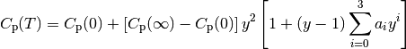
where 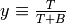 is a scaled temperature that ranges from zero to one. (The characteristic temperature
 is chosen by
default to be 500 K.) This formulation has the advantage of correctly
reproducting the heat capacity behavior as 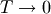 and
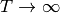. The low-temperature limit
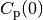 is taken to be 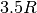 for linear molecules
and 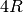 for nonlinear molecules. The high-temperature limit
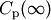 is taken to be
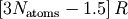 for linear molecules and
is chosen by
default to be 500 K.) This formulation has the advantage of correctly
reproducting the heat capacity behavior as 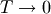 and
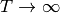. The low-temperature limit
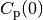 is taken to be 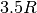 for linear molecules
and 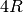 for nonlinear molecules. The high-temperature limit
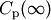 is taken to be
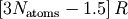 for linear molecules and
![\left[ 3 N_\mathrm{atoms} - (2 + 0.5 N_\mathrm{rotors}) \right] R](../_images/math/e3f35e9652ad843f00f9ce45a7c926a230a42027.png) for nonlinear molecules, for a molecule composed of 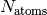
atoms and 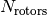 internal rotors.
for nonlinear molecules, for a molecule composed of 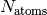
atoms and 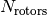 internal rotors.The Wilhoit parameters are stored in the attributes cp0, cpInf, a0, a1, a2, a3, and B. There are also integration constants H0 and S0 that are needed to evaluate the enthalpy and entropy, respectively.
- fitToData()¶
Fit a Wilhoit model to the data points provided, allowing the characteristic temperature B to vary so as to improve the fit. This procedure requires an optimization, using the fminbound function in the scipy.optimize module. The data consists of a set of dimensionless heat capacity points Cplist at a given set of temperatures Tlist in K. The linearity of the molecule, number of vibrational frequencies (not including internal rotors), and number of internal rotors (linear,`nFreq`, and nRotors, respectively) is used to set the limits at zero and infinite temperature.
- fitToDataForConstantB()¶
Fit a Wilhoit model to the data points provided using a specified value of the characteristic temperature B. The data consists of a set of dimensionless heat capacity points Cplist at a given set of temperatures Tlist in K. The linearity of the molecule, number of vibrational frequencies, and number of internal rotors (linear, nFreq, and nRotors, respectively) is used to set the limits at zero and infinite temperature.
- getEnthalpy()¶
Return the enthalpy in J/mol at the specified temperature T in K. The formula is
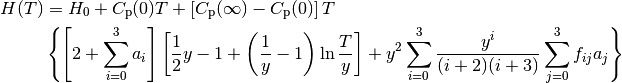
where
 if
if  , 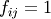 if
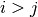, and 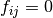 if 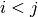.
, 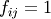 if
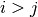, and 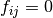 if 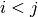.
- getEntropy()¶
Return the entropy in J/mol*K at the specified temperature T in K. The formula is
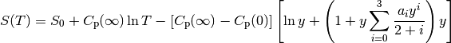
- getFreeEnergy()¶
Return the Gibbs free energy in J/mol at the specified temperature T in K.
- getHeatCapacity()¶
Return the constant-pressure heat capacity in J/mol*K at the specified temperature T in K.
NASA Polynomial Thermodynamics Model¶
- class rmgpy.thermo.NASA¶
A single NASA polynomial for thermodynamic data. The coeffs attribute stores the seven or nine polynomial coefficients 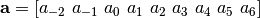 from which the relevant thermodynamic parameters are evaluated via the expressions
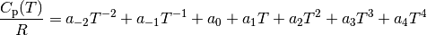
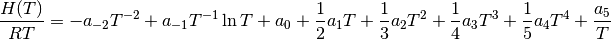
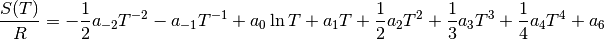
The coefficients are stored internally in the nine-coefficient format, even when only seven coefficients are provided.
- getEnthalpy()¶
Return the enthalpy in J/mol at the specified temperature T in K.
- getEntropy()¶
Return the entropy in J/mol*K at the specified temperature T in K.
- getFreeEnergy()¶
Return the Gibbs free energy in J/mol at the specified temperature T in K.
- getHeatCapacity()¶
Return the constant-pressure heat capacity in J/mol*K at the specified temperature T in K.
- class rmgpy.thermo.MultiNASA¶
A set of thermodynamic parameters given by NASA polynomials. This class stores a list of NASA objects in the polynomials attribute. When evaluating a thermodynamic quantity, a polynomial that contains the desired temperature within its valid range will be used.
- getEnthalpy()¶
Return the enthalpy in J/mol at the specified temperature T in K.
- getEntropy()¶
Return the entropy in J/mol*K at the specified temperature T in K.
- getFreeEnergy()¶
Return the Gibbs free energy in J/mol at the specified temperature T in K.
- getHeatCapacity()¶
Return the constant-pressure heat capacity in J/mol*K at the specified temperature T in K.
Table Of Contents
Previous topic
rmgpy.statmech — Molecular Degrees of Freedom